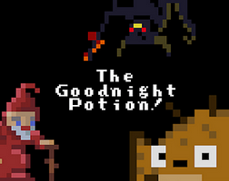
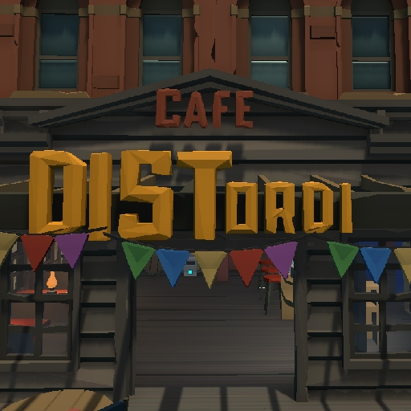
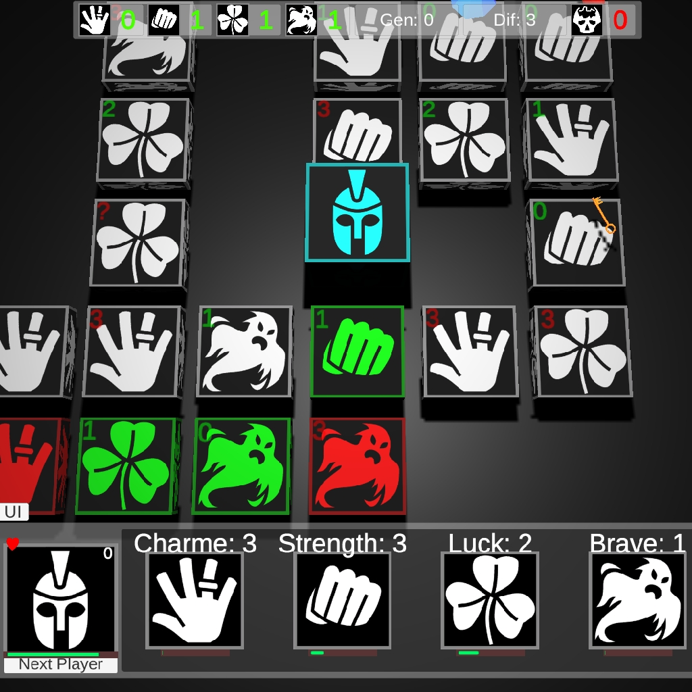
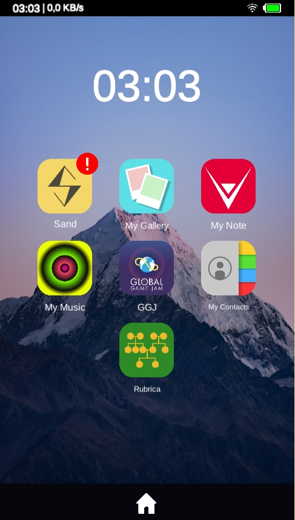
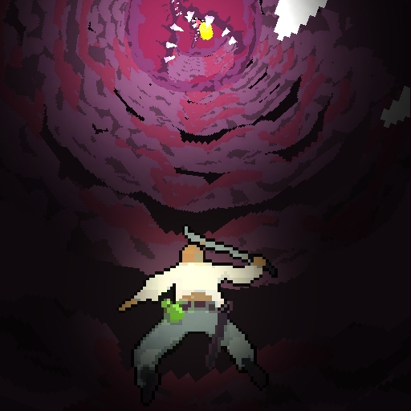
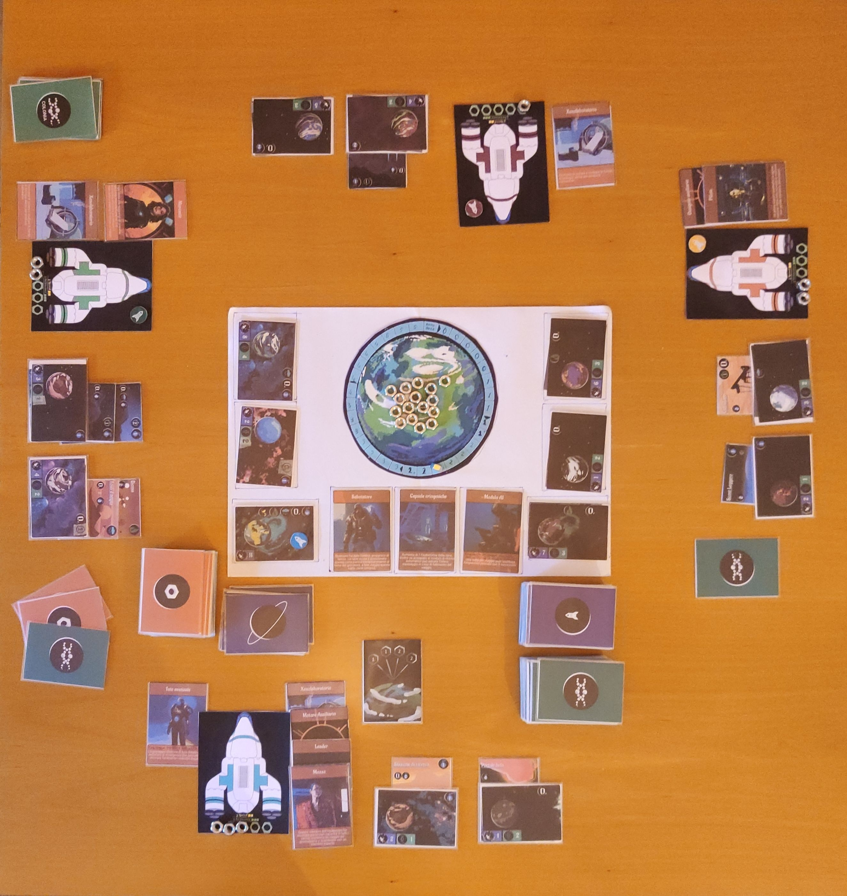
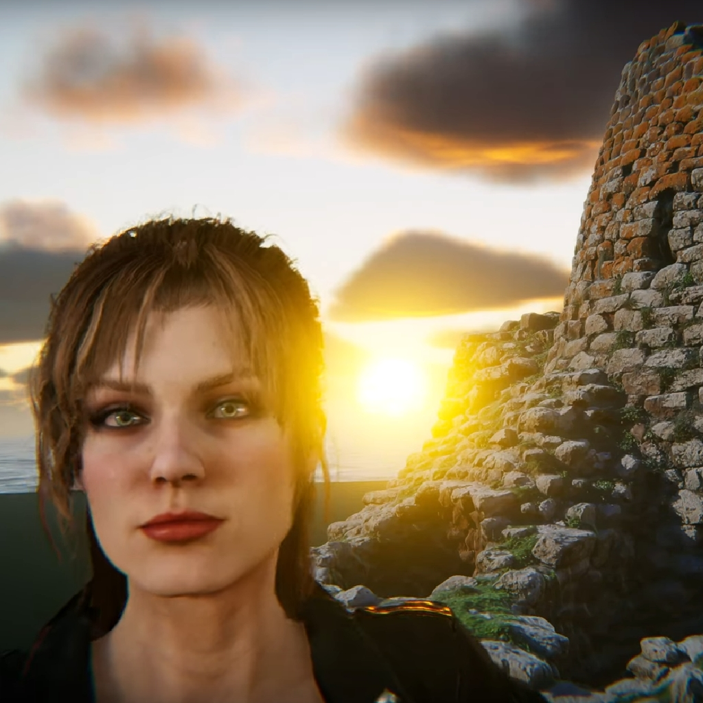
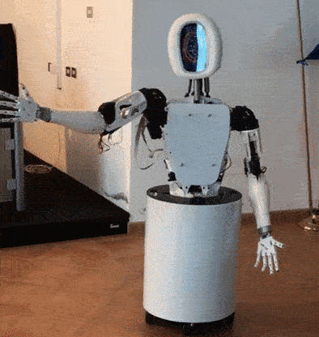

Videogames
As an indie developer, I embrace the creative freedom to craft unique gaming experiences that resonate with players.
My projects, showcase innovative gameplay mechanics and thought-provoking themes. Goodnight Potion cleverly explores the concept of addiction through humor. Meanwhile, Out of Here indirectly addresses the delicate balance between the world's economic powers
I strive to create games that not only entertain but also provoke thought and emotion. Explore my portfolio to discover the worlds I've built and the stories I've told.
Goodnight Potion
A 2D puzzle game where a wizard must finish all his potions before going to sleep, featuring over 30 levels and an endless mode.
Itch Game PageDistordi
A 3D third-person multiplayer puzzle game, where players recover memories by exploring clues created by AI.
Itch Game PageTree of Heroes
An RPG strategy game featuring procedurally generated obstacle courses for two heroes to reunite, developed for the Procedural Game Jam.
Itch Game PageMy Stupid Big family
 Itch Game PageWurm slayer
Your village is in danger and you are the only one who can save it. Salvation lies in destroying the heart of this soulless monster. Throw yourself into its jaws and begin your descent into darkness.
Itch Game PageBoardgames
Out of Here
A space exploration-themed card game where players try to save humanity by finding a new planet as Earth faces collapse.
Research Projects
In my role as a technology researcher, I delve into innovative concepts and practical applications that push the boundaries of interactive design and technology
Digital Twins for Cultural Heritage
Development of prototypes and editor tools for creating digital twins of museum for cultural preservation.
CRS4 pageRossana
Rossana is an anthropomorphic robotic assistant developed to guide and assist visitors within a library setting. Built using Unity, Arduino, Vive Tracker, and orchestrated with ROS. The robot integrates voice control and facial recognition, creating a seamless and intuitive user experience.
CRS4 pageSarim

An immersive VR experience designed for HTC Vive, showcasing the rich cultural heritage of Sardinia. Using photogrammetry techniques, the project recreates high-fidelity 3D models of significant Sardinian monuments, allowing users to explore historical sites in a virtual environment.
YouTube playlist